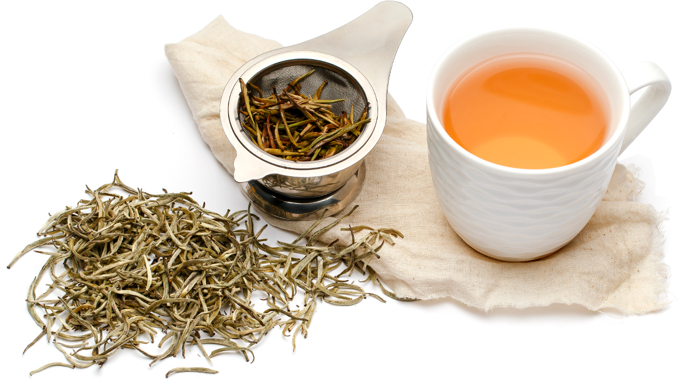
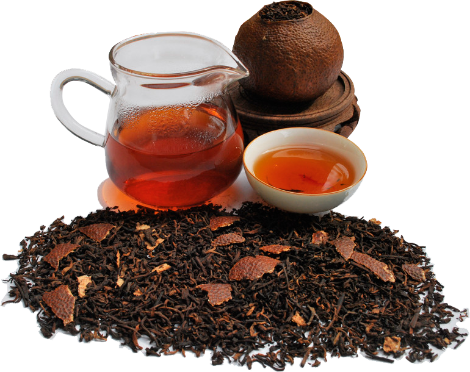

-
White Tea
wilted and unoxidized
-
Yellow Tea

Unwilted and unoxidized,
but allowed to yellow -
Green Tea

Unwilted and unoxidized
-
Oolong Tea

Wilted, bruised, and
partially oxidized -
Dark Tea
Unwilted and unoxidized
-
Black Tea

Wilted, sometimes crushed, fully oxidized.
Called [hóngchá] in East Asia